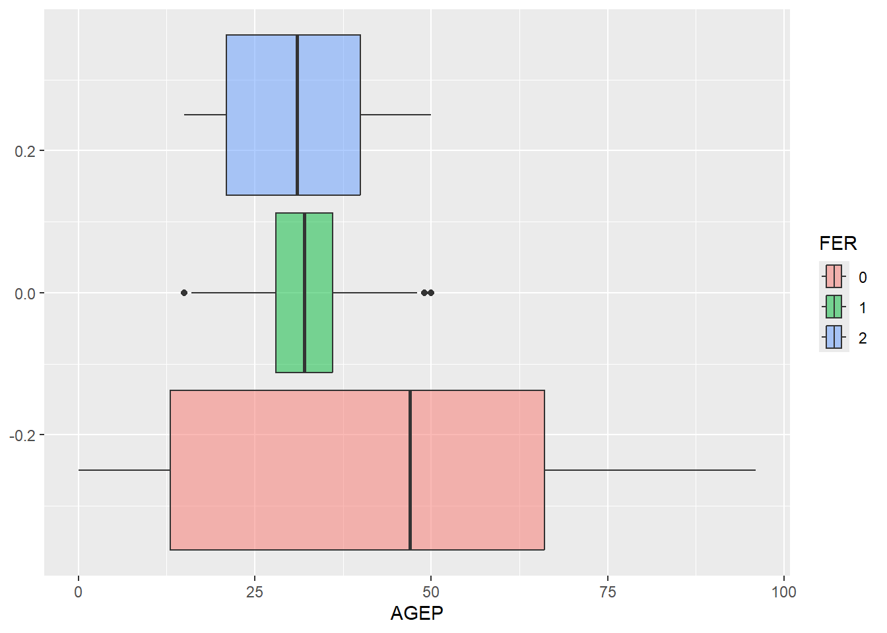
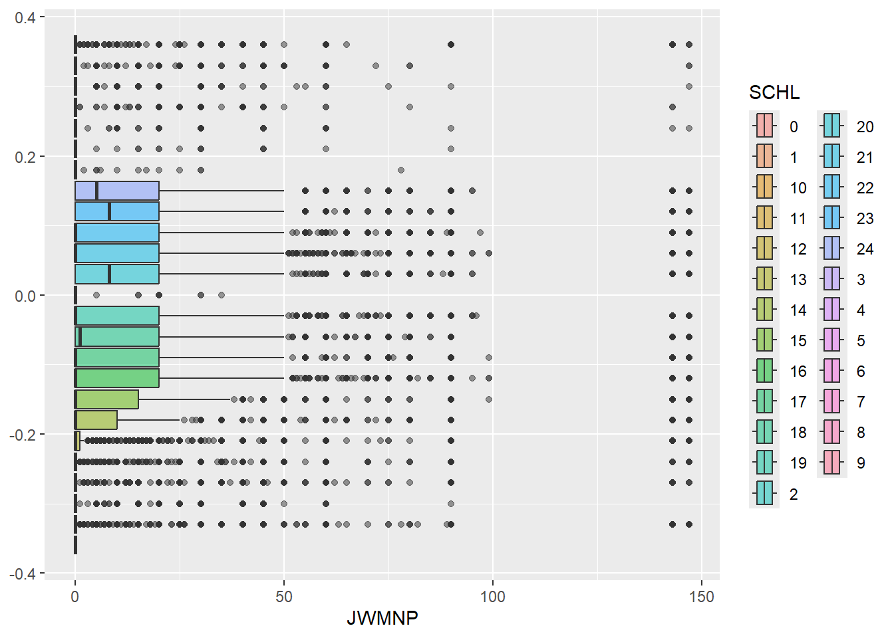
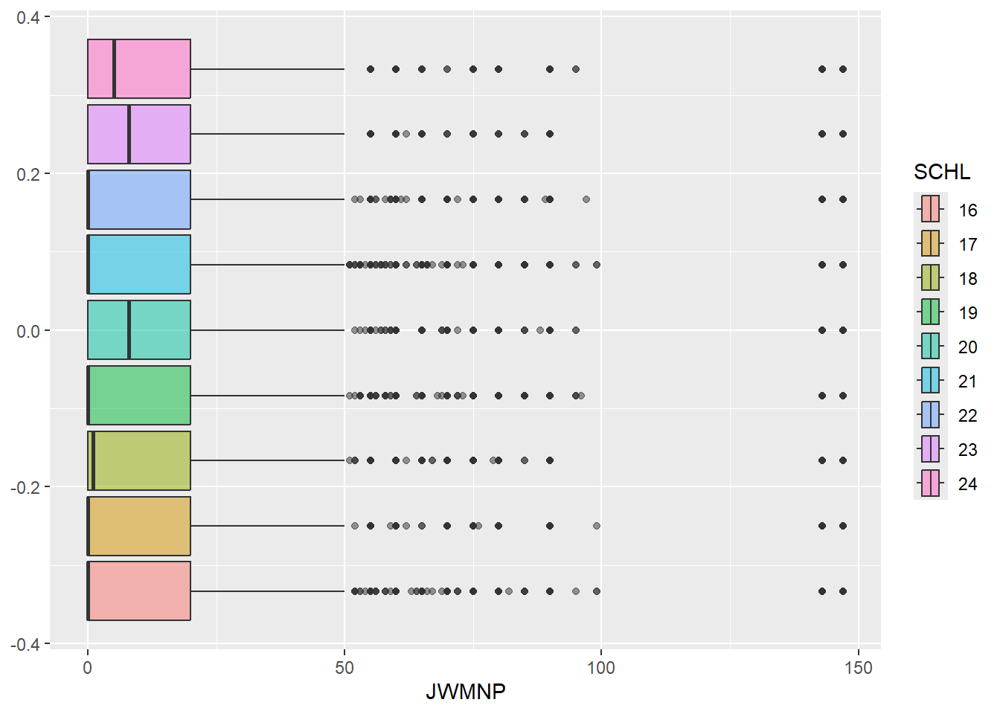
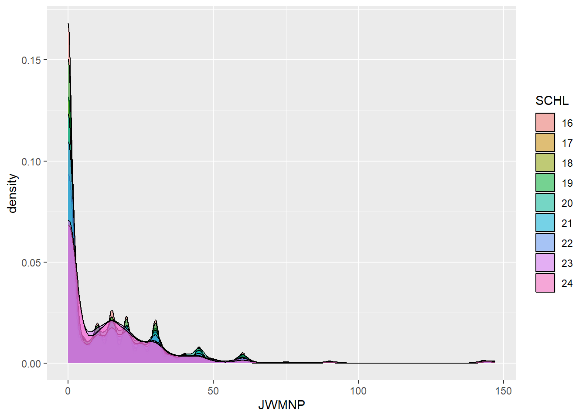
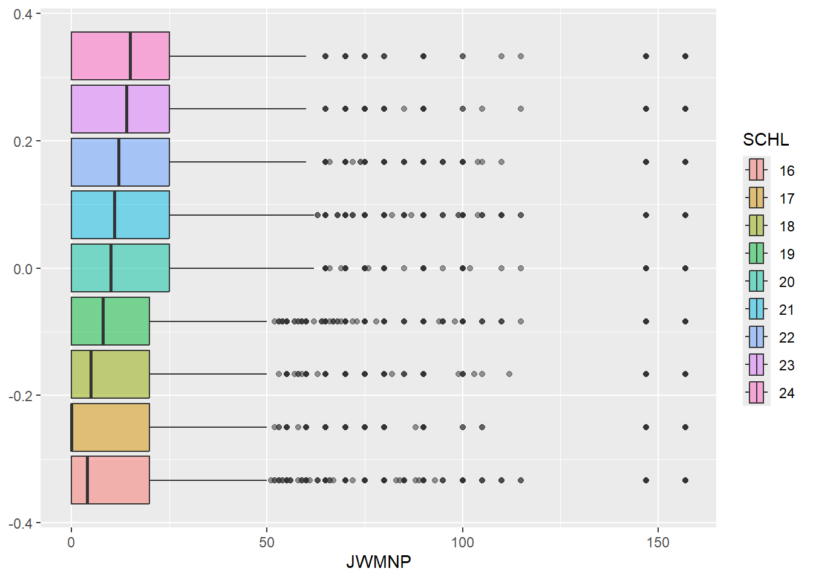
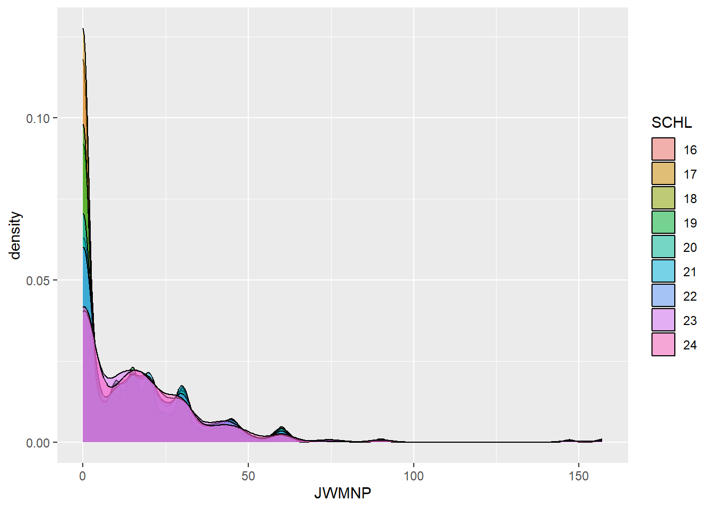

library(httr)
library(jsonlite)
library(tidyverse)
library(lubridate)
library(hms)
library(ggplot2)
apiKey = "4c8e34087cd2fa65ceac20aca5e806b356fffe37"Project1
Project 1
Executive Summary:
In this project, I will explore the Public Use Microdata Sample (PUMS) Census data set. The PUMS data set is a curated data set that is derived from the US Census, made anonymous, and generalized to simulate individual census responses without actually including actual responses. The PUMS data is made available over an API, which will be investigated in this report. After investigating the data that comes from the API and its structure, the methods for creating function/s for querying this API systematically will be detailed, along with methods for summarizing and visualizing the results. Finally, an investigation will be done that will leverage the PUMS data and functions written to glean real-world insight.
Exploration of the PUMS API
Methods for Data Collection and Analysis
Application
Prerequisites:
Exploring the PUMS API
First, we will test the API to see the types of data that it provides.
resp = httr::GET("https://api.census.gov/data/2024/acs/acs1/pums?get=SEX,PWGTP,MAR&for=region:*&SCHL=24&key=4c8e34087cd2fa65ceac20aca5e806b356fffe37")
resp$status_code[1] 200I received a good response code, meaning that the API key and generic URL are working as expected. Now to move on to interrogating the data from the API
respString = rawToChar(resp$content)The data looks to be formatted like a list of lists. The first row are the requested column headers, and each subsequent row represents an individual in the census. We will need to figure out how to translate the the large character string into a tibble.
After some research, this data is a form of JSON, so we can use the fromJSON() function to convert to a matrix.
First we will see if we can convert to a matrix. Then from there, we can easily convert to a tibble.
respMat = (fromJSON((respString)))
class(respMat)[1] "matrix" "array" This is a matrix, let’s try to format as a tibble next.
census = as_tibble(respMat)Warning: The `x` argument of `as_tibble.matrix()` must have unique column names if
`.name_repair` is omitted as of tibble 2.0.0.
ℹ Using compatibility `.name_repair`.head(census)# A tibble: 6 × 5
V1 V2 V3 V4 V5
<chr> <chr> <chr> <chr> <chr>
1 SEX PWGTP MAR SCHL region
2 2 17 1 24 4
3 1 58 3 24 2
4 2 72 2 24 3
5 2 13 1 24 3
6 2 37 5 24 2 This is better, but the first row should be column headers.
names(census) = census[1,]Warning: The `value` argument of `names<-()` must be a character vector as of tibble
3.0.0.census = census |> slice(-1)
head(census)# A tibble: 6 × 5
SEX PWGTP MAR SCHL region
<chr> <chr> <chr> <chr> <chr>
1 2 17 1 24 4
2 1 58 3 24 2
3 2 72 2 24 3
4 2 13 1 24 3
5 2 37 5 24 2
6 2 47 5 24 1 Looks good! We will use a similar pattern to create a function that retrieves PUMS data for a variety of inputs from the user
Methods for Data Collection and Analysis
First, we will pre-define a few helper functions and variables that will help us along the way. The helper functions and variables accomplish a few goals:
Convert raw responses from the API to a tibble, which we can further manipulate using tidyverse functions we know and love.
Convert variable encodings from JSON strings to arrays with name/value pairs. These will be defined up front and converted to arrays up front to save execution time later on in the program, since these encodings will be used frequently.
Map user inputs to variable encoding. Since the API provides categorical variables in numeric encodings (ex - the state “47” in the API represents Tennessee), we will write some helper functions that will allow users to provide intuitive inputs to the function to query the API more easily.
Convert variables representing time stamps to a useful format. We will use the lubridate package to write a function that takes in numeric code representing a time of day and return a helpful time stamp in the format of hh:mm:ss.
Helper Function to Convert API Response to Tibble
The helper function will take a raw response from an API call and return a tibble.
This function makes certain assumptions about how the data from the Census API are structured.
Assumptions:
- The first row of the returned data will always contain the row names
- The schema will always be JSON list of lists
rawtoTibble = function(rawResp){
respTibble = as_tibble(fromJSON(rawToChar(rawResp)))
names(respTibble) = respTibble[1, ]
respTibble = respTibble |> slice(-1)
return(respTibble)
}Test with an API response:
test = httr::GET("https://api.census.gov/data/2024/acs/acs1/pums?get=SEX,PWGTP,MAR&for=division:*&SCHL=24&key=4c8e34087cd2fa65ceac20aca5e806b356fffe37")
head(rawtoTibble(test$content))# A tibble: 6 × 5
SEX PWGTP MAR SCHL division
<chr> <chr> <chr> <chr> <chr>
1 2 17 1 24 9
2 1 58 3 24 3
3 2 72 2 24 5
4 2 13 1 24 5
5 2 37 5 24 4
6 2 47 5 24 2 Defining Codes to JSON Early
stateMap = '{
"47": "Tennessee/TN",
"04": "Arizona/AZ",
"05": "Arkansas/AR",
"49": "Utah/UT",
"09": "Connecticut/CT",
"50": "Vermont/VT",
"28": "Mississippi/MS",
"37": "North Carolina/NC",
"42": "Pennsylvania/PA",
"45": "South Carolina/SC",
"51": "Virginia/VA",
"15": "Hawaii/HI",
"25": "Massachusetts/MA",
"72": "Puerto Rico/PR",
"30": "Montana/MT",
"33": "New Hampshire/NH",
"35": "New Mexico/NM",
"12": "Florida/FL",
"48": "Texas/TX",
"53": "Washington/WA",
"13": "Georgia/GA",
"18": "Indiana/IN",
"20": "Kansas/KS",
"26": "Michigan/MI",
"32": "Nevada/NV",
"54": "West Virginia/WV",
"55": "Wisconsin/WI",
"27": "Minnesota/MN",
"16": "Idaho/ID",
"19": "Iowa/IA",
"22": "Louisiana/LA",
"38": "North Dakota/ND",
"01": "Alabama/AL",
"02": "Alaska/AK",
"06": "California/CA",
"08": "Colorado/CO",
"11": "District of Columbia/DC",
"23": "Maine/ME",
"34": "New Jersey/NJ",
"39": "Ohio/OH",
"10": "Delaware/DE",
"56": "Wyoming/WY",
"21": "Kentucky/KY",
"24": "Maryland/MD",
"44": "Rhode Island/RI",
"46": "South Dakota/SD",
"17": "Illinois/IL",
"29": "Missouri/MO",
"31": "Nebraska/NE",
"36": "New York/NY",
"40": "Oklahoma/OK",
"41": "Oregon/OR"
}'
states = fromJSON(stateMap)
divisionsMap = '{
"7": "West South Central",
"2": "Middle Atlantic",
"4": "West North Central",
"6": "East South Central",
"3": "East North Central",
"9": "Pacific",
"0": "Puerto Rico",
"5": "South Atlantic",
"8": "Mountain",
"1": "New England"
}'
divisions = fromJSON(divisionsMap)
timeCodes = '{
"0": "NA",
"001": "120",
"002": "420",
"003": "720",
"004": "1020",
"005": "1320",
"006": "1620",
"007": "2070",
"008": "2520",
"009": "2820",
"010": "3270",
"011": "3720",
"012": "4020",
"013": "4320",
"014": "4620",
"015": "4920",
"016": "5220",
"017": "5520",
"018": "5820",
"019": "6120",
"020": "6420",
"021": "6870",
"022": "7320",
"023": "7620",
"024": "7920",
"025": "8220",
"026": "8520",
"027": "8820",
"028": "9120",
"029": "9420",
"030": "9720",
"031": "10020",
"032": "10320",
"033": "10620",
"034": "10920",
"035": "11220",
"036": "11520",
"037": "11820",
"038": "12120",
"039": "12420",
"040": "12720",
"041": "13020",
"042": "13320",
"043": "13620",
"044": "13920",
"045": "14220",
"046": "14520",
"047": "14820",
"048": "15120",
"049": "15420",
"050": "15720",
"051": "16020",
"052": "16320",
"053": "16620",
"054": "16920",
"055": "17220",
"056": "17520",
"057": "17820",
"058": "18120",
"059": "18420",
"060": "18720",
"061": "19020",
"062": "19320",
"063": "19620",
"064": "19920",
"065": "20220",
"066": "20520",
"067": "20820",
"068": "21120",
"069": "21420",
"070": "21720",
"071": "22020",
"072": "22320",
"073": "22620",
"074": "22920",
"075": "23220",
"076": "23520",
"077": "23820",
"078": "24120",
"079": "24420",
"080": "24720",
"081": "25020",
"082": "25320",
"083": "25620",
"084": "25920",
"085": "26220",
"086": "26520",
"087": "26820",
"088": "27120",
"089": "27420",
"090": "27720",
"091": "28020",
"092": "28320",
"093": "28620",
"094": "28920",
"095": "29220",
"096": "29520",
"097": "29820",
"098": "30120",
"099": "30420",
"100": "30720",
"101": "31020",
"102": "31320",
"103": "31620",
"104": "31920",
"105": "32220",
"106": "32520",
"107": "32820",
"108": "33120",
"109": "33420",
"110": "33720",
"111": "34020",
"112": "34320",
"113": "34620",
"114": "34920",
"115": "35220",
"116": "35520",
"117": "35820",
"118": "36120",
"119": "36420",
"120": "36720",
"121": "37020",
"122": "37320",
"123": "37620",
"124": "37920",
"125": "38220",
"126": "38520",
"127": "38820",
"128": "39120",
"129": "39420",
"130": "39720",
"131": "40020",
"132": "40320",
"133": "40620",
"134": "40920",
"135": "41220",
"136": "41520",
"137": "41820",
"138": "42120",
"139": "42420",
"140": "42720",
"141": "43020",
"142": "43320",
"143": "43620",
"144": "43920",
"145": "44220",
"146": "44520",
"147": "44820",
"148": "45120",
"149": "45420",
"150": "45720",
"151": "46020",
"152": "46320",
"153": "46620",
"154": "46920",
"155": "47220",
"156": "47520",
"157": "47820",
"158": "48120",
"159": "48420",
"160": "48720",
"161": "49020",
"162": "49320",
"163": "49620",
"164": "49920",
"165": "50220",
"166": "50520",
"167": "50820",
"168": "51120",
"169": "51420",
"170": "51720",
"171": "52020",
"172": "52320",
"173": "52620",
"174": "52920",
"175": "53220",
"176": "53520",
"177": "53820",
"178": "54120",
"179": "54420",
"180": "54720",
"181": "55020",
"182": "55320",
"183": "55620",
"184": "55920",
"185": "56220",
"186": "56520",
"187": "56820",
"188": "57120",
"189": "57420",
"190": "57720",
"191": "58020",
"192": "58320",
"193": "58620",
"194": "58920",
"195": "59220",
"196": "59520",
"197": "59820",
"198": "60120",
"199": "60420",
"200": "60720",
"201": "61020",
"202": "61320",
"203": "61620",
"204": "61920",
"205": "62220",
"206": "62520",
"207": "62820",
"208": "63120",
"209": "63420",
"210": "63720",
"211": "64020",
"212": "64320",
"213": "64620",
"214": "64920",
"215": "65220",
"216": "65520",
"217": "65820",
"218": "66120",
"219": "66420",
"220": "66720",
"221": "67020",
"222": "67320",
"223": "67620",
"224": "67920",
"225": "68220",
"226": "68520",
"227": "68820",
"228": "69120",
"229": "69420",
"230": "69720",
"231": "70020",
"232": "70320",
"233": "70620",
"234": "70920",
"235": "71220",
"236": "71520",
"237": "71820",
"238": "72120",
"239": "72420",
"240": "72720",
"241": "73020",
"242": "73320",
"243": "73620",
"244": "73920",
"245": "74220",
"246": "74520",
"247": "74820",
"248": "75120",
"249": "75420",
"250": "75720",
"251": "76020",
"252": "76320",
"253": "76620",
"254": "76920",
"255": "77220",
"256": "77520",
"257": "77820",
"258": "78120",
"259": "78420",
"260": "78720",
"261": "79020",
"262": "79320",
"263": "79620",
"264": "79920",
"265": "80220",
"266": "80520",
"267": "80820",
"268": "81120",
"269": "81420",
"270": "81720",
"271": "82020",
"272": "82320",
"273": "82620",
"274": "82920",
"275": "83220",
"276": "83520",
"277": "83820",
"278": "84120",
"279": "84420",
"280": "84720",
"281": "85020",
"282": "85320",
"283": "85620",
"284": "85920",
"285": "86220"
}'
times = (fromJSON(timeCodes))Helper For Returning State Code
This function can take strings of many forms representing the desired state and return the corresponding state code needed to query the API
getStateCode = function(stateStr){
for (i in 1:length(states)){
if (grepl(toupper(stateStr), toupper(states[i]), fixed=TRUE)){
return(as.numeric(names(states[i])))
}
}
stop("Bad State Name")
}
getStateCode("ar")[1] 4Helper For Getting Division
User Must Specify the exact division name (not case sensitive)
getDivisionCode = function(divisionStr){
for (i in 1:length(divisions)){
if (toupper(divisionStr) == toupper(divisions[i])){
return(as.numeric(names(divisions[i])))
}
}
stop("Bad Division Name")
}
getDivisionCode("mountain")[1] 8Helper For Getting Region
User Must Specify the exact region name (not case sensitive)
getRegionCode = function(regionStr){
regionsMap = '{
"1": "Northeast",
"9": "Puerto Rico",
"3": "South",
"4": "West",
"2": "Midwest"
}'
regions = fromJSON(regionsMap)
for (i in 1:length(regions)){
if (toupper(regionStr) == toupper(regions[i])){
return(as.numeric(names(regions[i])))
}
}
stop("Bad Region Name")
}
getRegionCode("west")[1] 4Helper to Convert Time Code to Time Stamp (hh:mm:ss)
#dateMatrix = as.numeric(dateMatrix)
codeToTime = function(timeStr){
for (i in 1:length(times)){
if (timeStr == names(times[i])){
return(as_hms(as.numeric(times[i])))
}
}
}Define Function to Query the PUMS API Main Function
The purpose of the function getCensusData() is to take in a user input for details about the data they would like to query from the PUMS API and output a tibble with the requested data that is ready for analysis.
Inputs:
Year: The year in which the user should query the API (integer)
NumericVars: The numeric variables that the user would like to query from the API. Available options are AGEP, GASP, GRPIP, JWAP, JWDP, JWMNP
CategoricalVars: The categorical variables that the user would like to query from the API. Available options are FER, HHL, SCHL, SCHL, and SEX.
GeoLevel: The level of geography in which the user would like to search (region, division, state, or all)
Spec: For a specified value of geoLevel, the actual value of the geoLevel should be provided for the API to filter on the desired region (region, division, state)
Output:
A tibble with all categorical and numeric variables property type casted and ready for analyses. The returned tibble will also include the PWGTP variable, which represents the estimated number of replicates with the same census responses.
Error Handling Features:
User provides a data that is not within the range of the PUMS data set
User provides an incorrectly spelled variable
User did not provide any of the pre-defined variables
User provides in incorrectly specified geography level or filtering specification
Function Flow:
The function uses the helpers defined above to query th
- Check Inputs: If the user provides invalid inputs, catch them before querying the API
- Map user inputs to API Substrings: Parse user inputs and transform them so that they can be used for an API call
- Build the API String: Concatenate the transformed user inputs into one API call string
- Query the API: Use the helper function to query the API and return the results as a tibble
- Transform Variables: Cast the variables in the returned tibble to their intended types.
getCensusData = function(year = 2022,
numericVars = c("AGEP"),
categoricalVars = c("SEX"),
geoLevel = "State",
spec = "NC"){
if (!(year > 2009) & (year < 2023)){
stop("Bad Year Input. Try Again")
}
acceptableNumericVars = c("AGEP", "GASP", "GRPIP", "JWAP", "JWDP", "JWMNP")
for (i in length(numericVars)){
##IF PWGTP is given as an input, remove it from the vector, as we will return it anyway
if(numericVars[i] == "PWGTP"){
numericVars = numericVars[-c(i)]
}
## Check to see if the numeric variables provided are in the list
if (!(numericVars[i] %in% acceptableNumericVars)){
stop("Bad Numeric Variable Input. Try Again")
}
}
# If we don't request anything, stop
if (length(numericVars) == 0){
stop("You must select one of the following numeric variables:
AGEP, GASP, GRPIP, JWAP, JWDP, JWMNP")
}
## Categorial
acceptableCategoricalVars = c("FER", "HHL", "SCH", "SCHL","SEX")
for (i in length(categoricalVars)){
## Check to see if the categorical variables provided are in the list
if (!(categoricalVars[i] %in% acceptableCategoricalVars)){
stop("Bad Categorical Variable Input. Try Again")
}
}
## Region: Check if the user only gives 1 region and it's in the list
geoLevel = tolower(geoLevel)
acceptableRegionLabels = c("region", "division", "state", "all")
if (!(geoLevel %in% acceptableRegionLabels) & (length(geoLevel) ==1)){
stop("Bad Geography Variable Input Try Again")
}
if (geoLevel == 'state'){
geoId = getStateCode(spec)
}
else if (geoLevel == 'division'){
geoId = getDivisionCode(spec)
}
else if (geoLevel == 'region'){
geoId = getRegionCode(spec)
}
else{
geoId = '*'
}
## Build API Call URL
baseUrl = paste0("https://api.census.gov/data/",year,"/acs/acs1/pums?")
numVarStr = paste(c("PWGTP",numericVars), collapse = ",")
catVarStr = paste(categoricalVars, collapse = ",")
vars = paste(numVarStr, catVarStr, sep = ',')
varsUrl = paste0("get=", vars)
geoLevelUrl = paste0("for=",geoLevel,":",geoId)
keyUrl = paste0("key=",apiKey)
finalUrl = paste0(baseUrl,varsUrl,'&',geoLevelUrl,'&',keyUrl)
### Call API and turn result into a tibble
resp = httr::GET(finalUrl)
respTibble =rawtoTibble(resp$content)
## Cast Categorial Variables into factors
for (i in 1:length(names(respTibble))){
column = respTibble[ ,i]
colName = names(column)
if(colName %in% categoricalVars){
respTibble[[colName]] = as.factor(column[[colName]])
}
else if(colName %in% numericVars){
respTibble[[colName]] = as.numeric(column[[colName]])
}
}
respTibble[["PWGTP"]] = as.numeric(respTibble[["PWGTP"]])
## Format Timestamps
cols = colnames(respTibble)
for (i in 1:length(cols)){
colName = names(respTibble)[i]
if (colName == "JWAP" | colName == "JWDP"){
respTibble[[colName]] = apply(respTibble[colName],MARGIN = 1, FUN = codeToTime)
}
}
## Add year
respTibble = respTibble |> mutate(year = year)
## Assign Class
class(respTibble) <- c("census", class(respTibble))
return(respTibble)
}
test = getCensusData(numericVars = c("AGEP", "GASP", "JWAP"), categoricalVars = c("FER", "HHL"), geoLevel = "region", spec = "northeast")Define Function to Query Multiple Years of Census Data
The function below takes in the same inputs as the getCensusData() function, except for the variable “years” can be an array of years that represents years that the user would like to query. This function will call getCensusData() for each year provided and combine the results into one tibble.
getCensusDataYears = function(years = c(2022),
numericVars = c("AGEP"),
categoricalVars = c("SEX"),
geoLevel = "State",
spec = "NC"){
for (i in 1:length(years)){
if (i > 1){
yearDataOld <- yearDataNew
}
yearDataNew <- getCensusData(year = years[i],
numericVars = numericVars,
categoricalVars = categoricalVars,
geoLevel = geoLevel,
spec = spec)
if (length(years) == 1){
return(yearDataNew)
}
if (i > 1){
yearData = rbind(yearDataOld, yearDataNew)
}
}
return(yearData)
}
head(getCensusDataYears(years = c(2019, 2018)))# A tibble: 6 × 5
PWGTP AGEP SEX state year
<dbl> <dbl> <fct> <chr> <dbl>
1 70 52 1 37 2019
2 70 50 1 37 2019
3 16 28 1 37 2019
4 80 49 1 37 2019
5 7 3 1 37 2019
6 52 30 1 37 2019Define summarize() Function for the census Class
For a tibble with the class “census”, this function will return a summary of numeric and categorical variables. These summaries will be provided in a list.
For numeric variables, the sample mean and sample standard deviation will be provided
For categorical variables, the count of each level of the variable will be provided.
summary.census <- function(tib, numVars = "all", catVars = "all"){
tib = tib |> select(-c(PWGTP, year))
if(numVars != "all"){
numVars = names(tib |> select(numVars))
}
else{
numVars = names(tib |> select(where(is.numeric)))
}
if(catVars != "all"){
catVars = names(tib |> select(catVars))
}
else{
catVars = names(tib |> select(where(is.factor)))
}
vars = c(numVars, catVars)
tib = tib |> select(vars)
numSummaries = tib |> drop_na() |>
summarize(across(where(is.numeric),
list("mean" = mean, "standardDev" = sd),
.names = "{.fn}_{.col}"))
catSummaries = list()
for (i in 1:length(catVars)){
var = catVars[i]
varSummary = tib |> group_by(!!sym(var)) |>
select(var) |>
summarize (count = n())
catSummaries[[i]] = varSummary
names(catSummaries)[[i]] = paste0(var,"Summary")
}
summaries = list(numericVariableSummaries = numSummaries,
categoricalVariableSummaries = catSummaries)
return(summaries)
}
summary(test)Warning: Using an external vector in selections was deprecated in tidyselect 1.1.0.
ℹ Please use `all_of()` or `any_of()` instead.
# Was:
data %>% select(vars)
# Now:
data %>% select(all_of(vars))
See <https://tidyselect.r-lib.org/reference/faq-external-vector.html>.Warning: Using an external vector in selections was deprecated in tidyselect 1.1.0.
ℹ Please use `all_of()` or `any_of()` instead.
# Was:
data %>% select(var)
# Now:
data %>% select(all_of(var))
See <https://tidyselect.r-lib.org/reference/faq-external-vector.html>.$numericVariableSummaries
# A tibble: 1 × 4
mean_AGEP standardDev_AGEP mean_GASP standardDev_GASP
<dbl> <dbl> <dbl> <dbl>
1 43.6 23.9 91.9 189.
$categoricalVariableSummaries
$categoricalVariableSummaries$FERSummary
# A tibble: 3 × 2
FER count
<fct> <int>
1 0 461978
2 1 5952
3 2 118039
$categoricalVariableSummaries$HHLSummary
# A tibble: 6 × 2
HHL count
<fct> <int>
1 0 36296
2 1 405874
3 2 56052
4 3 50488
5 4 27980
6 5 9279List is named contextually to be able to extract results
str(summary(test))List of 2
$ numericVariableSummaries : tibble [1 × 4] (S3: tbl_df/tbl/data.frame)
..$ mean_AGEP : num 43.6
..$ standardDev_AGEP: num 23.9
..$ mean_GASP : num 91.9
..$ standardDev_GASP: num 189
$ categoricalVariableSummaries:List of 2
..$ FERSummary: tibble [3 × 2] (S3: tbl_df/tbl/data.frame)
.. ..$ FER : Factor w/ 3 levels "0","1","2": 1 2 3
.. ..$ count: int [1:3] 461978 5952 118039
..$ HHLSummary: tibble [6 × 2] (S3: tbl_df/tbl/data.frame)
.. ..$ HHL : Factor w/ 6 levels "0","1","2","3",..: 1 2 3 4 5 6
.. ..$ count: int [1:6] 36296 405874 56052 50488 27980 9279Define plot() function for census Objects
This function will take in a tibble of class “census”, as well as a numeric and categorical variable within the tibble and return a box plot of the numeric variable at each level of the categorical variable.
## Plot function
plot.census <- function(tib, numVar, catVar){
g <- ggplot(tib |> drop_na(), aes(x = !!sym(numVar)))
g + geom_boxplot(alpha = 0.5, aes(fill = !!sym(catVar),weight = PWGTP))
}
plot(test, numVar = "AGEP", catVar = "FER")Warning in rq.fit.br(wx, wy, tau = tau, ...): Solution may be nonunique
Research Question
I am not a fan of commuting! Whether it’s the gas prices, the time spend in the car that I could be spending learning statistics, or the requirement to get up earlier, a shorter commute is always better. I want to investigate factors that may lead to a shorter commute time.
By using the functions I just created, I will compare commute times across different levels of education completed. I’ll look at the years 2020 and 2021 in North Carolina first. As a result, I should be looking at the variables “SCHL” (education level completed) and JWMNP (travel time to work).
commuteTime = getCensusDataYears(years = c(2021,2022),
numericVars = c("JWMNP"),
categoricalVars = c("SCHL"),
geoLevel = "State",
spec = "NC")head(commuteTime)# A tibble: 6 × 5
PWGTP JWMNP SCHL state year
<dbl> <dbl> <fct> <chr> <dbl>
1 78 5 19 37 2021
2 9 0 16 37 2021
3 32 0 19 37 2021
4 6 0 15 37 2021
5 119 5 19 37 2021
6 65 0 19 37 2021Let’s visualize these together.
plot(commuteTime, numVar = "JWMNP", catVar = "SCHL")
This is seems like we have way to much to analyze here. Especially provided many of the schooling codes don’t apply to someone my age (like someone who’s in kindergarten), I will filter the data set to only include levels of education from high school and on.
commuteTime = commuteTime |> filter(SCHL == "16" |
SCHL == "23" |
SCHL == "19" |
SCHL == "22" |
SCHL == "20" |
SCHL == "21" |
SCHL == "24" |
SCHL == "17" |
SCHL == "18")
plot(commuteTime, numVar = "JWMNP", catVar = "SCHL")
summary(commuteTime)$numericVariableSummaries
# A tibble: 1 × 2
mean_JWMNP standardDev_JWMNP
<dbl> <dbl>
1 11.2 18.9
$categoricalVariableSummaries
$categoricalVariableSummaries$SCHLSummary
# A tibble: 9 × 2
SCHL count
<fct> <int>
1 16 38265
2 17 7280
3 18 12818
4 19 24459
5 20 16568
6 21 36263
7 22 15805
8 23 3362
9 24 2752Each group has a very similar spread, with centers varying anywhere from 0 to 20 minutes. This seems pretty low. Lots of folks across all levels of education. Additionally, the summary of the commute time tells us that the mean commute time was 9 minutes with a standard deviation of around 17.5 minutes.
These distributions definitely do not look normally distributed either. Let’s look at the distribution of the commute time
g = g <- ggplot(commuteTime , aes(x = JWMNP))
g + geom_density(alpha = 0.5, aes(fill = SCHL ,weight = PWGTP))
Across all levels of schooling (filtered down) the distribution of commute time is definitely skewed right, with most of the observations being very short commutes (less than 30 mins)
I’m wondering if COVID has affected this. Let’s repeat the process but instead of 2022 and 2021, let’s look at the years 2018 and 2019.
commuteTimePre = getCensusDataYears(years = c(2018,2019),
numericVars = c("JWMNP"),
categoricalVars = c("SCHL"),
geoLevel = "State",
spec = "NC")commuteTimePre = commuteTimePre |> filter(SCHL == "16" |
SCHL == "23" |
SCHL == "19" |
SCHL == "22" |
SCHL == "20" |
SCHL == "21" |
SCHL == "24" |
SCHL == "17" |
SCHL == "18")
plot(commuteTimePre, numVar = "JWMNP", catVar = "SCHL")
summary(commuteTimePre)$numericVariableSummaries
# A tibble: 1 × 2
mean_JWMNP standardDev_JWMNP
<dbl> <dbl>
1 13.7 20.4
$categoricalVariableSummaries
$categoricalVariableSummaries$SCHLSummary
# A tibble: 9 × 2
SCHL count
<fct> <int>
1 16 35887
2 17 7017
3 18 12500
4 19 25161
5 20 15866
6 21 32882
7 22 13557
8 23 3012
9 24 2394g = g <- ggplot(commuteTimePre , aes(x = JWMNP))
g + geom_density(alpha = 0.5, aes(fill = SCHL ,weight = PWGTP))
There are some interesting results here!
First, the mean commute time dropped by around 2 minutes after the pandemic. This could be indicative of the increase in remote work. We also see this in the distributions of commute time across levels of education with more filled out tail representing the higher commute times
Next, the pattern in which we observe commute time change by the level of education completed completely changed before and after COVID. Pre-pandemic, we see the median commute time increase fairly consistently as the level of education increased. Post-Pandemic, the median commute times are much more consistent (and consistently lower) across all groups. We saw the drop in commute time decrease drastically across the groups that completed more education. This may be an indication that the jobs that went remote were mostly ones that were held by individuals with more education.